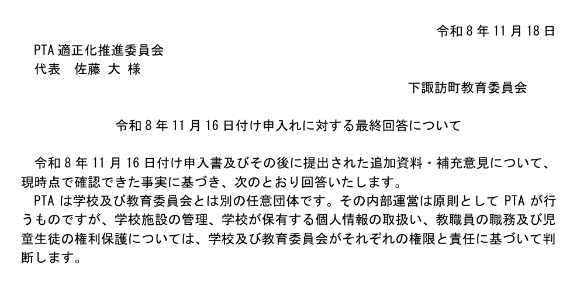

PTAの役員選出に、学校の名簿は使わない
下諏訪町教育委員会は、PTAの会員管理、役員候補の抽出、抽選、辞退審査に学校の保有情報を使わず、これらの目的でPTAに提供しないと回答した。
下諏訪町教育委員会は、PTAの会員管理、役員候補の抽出、抽選、辞退審査に学校の保有情報を使わず、これらの目的でPTAに提供しないと回答した。

学校による収納、PTAによる直接徴収。会費の徴収方法に言及した全国79団体の回答・資料から、委任、本人同意、学校徴収金規則を根拠に挙げた行政の説明を読む。
入会申込書、退会届、同意書など、10種類の文書の存否を各校で調べた。
PTA会費の引き落としに使う口座を、市はどう説明したか。10月6日と11月9日の行政回答を照合した。
入会届を誰が受け取り、会員名簿を誰が作るのか。会費の請求先から学校施設の使用まで、学校とPTAの事務分担をたどる。
地図上の地点は自治体の調査と教育委員会の回答に、都道府県名は地域別の資料一覧につながります。
西宮市のPTA運営ハンドブック、公式ページ、個人情報保護委員会の令和8年3月資料を検証。入会届による意思確認、PTA自身による会員情報の取得、学校からPTAへの臨時的な個人情報提供の法的整理を解説。
2025年12月のオプトイン・意思確認通知、2026年10月会費徴収見直し通知、11月2日行政回答を原本画像5点と全文で検証。PTAの入退会の自由、準公金取扱要領、会費・名簿の学校からの分離を論じる。
保護者の嘆願から学校名簿の役員選出目的での利用・提供を制限する行政回答まで。原本の抜粋画像8点、暫定回答・最終回答全文とPDFで、入退会自由、家庭のプライバシー、教職員の分離、子どもの権利を詳しく検証。
松山市がPTA会費を校納金として市の口座振替で徴収する仕組みと、2026年10月6日・11月9日の回答の違いを一次資料で検証。仕分口座の実態、地方自治法235条の4第2項、徴収権限、個人情報、職員の職務、追及すべき質問と開示請求対象を示す。
学校は児童生徒の在籍を記録し、PTAは加入を申し込んだ人の会員名簿を作ります。二つの名簿は、作成者も利用目的も異なります。
公立学校への在籍は、学校と児童生徒・保護者との公的な関係です。これに対してPTAへの加入は、学校とは別の任意団体との関係です。入学したことも、退会を申し出なかったことも、保護者が加入を申し込んだ証拠にはなりません。
まず本人の加入意思を確認し、その申込みに基づいて会員を確定する。そこから会員名簿、会費負担、PTAによる個人情報の取得と利用がつながります。加入者が確定していない段階で、学校の名簿や口座情報を使って会費徴収や会員管理を先に始めれば、加入と学校事務の境界が逆転します。
学校や教職員がPTAに協力する場合も、善意や慣行だけで学校の事務になるわけではありません。誰の事務を、どの根拠と手続で、どの情報・口座・設備・勤務時間を使って行うのかを分けて確認する必要があります。
学校の在籍記録と、PTAが入会申込みから作る会員記録の関係。
オプトインとは、本人が「加入したい」と申し込む方式です。PTAがその申込みを受け入れ、誰が会員なのかを確定します。「加入したくない」と言わなかった人を会員にするオプトアウト方式とは、出発点が異なります。加入しない人を除外するのではなく、加入意思を示した人を確認して会員にする仕組みです。
PTAは、その加入記録に基づいて会員名簿を作り、会則・決議に基づく会費を会員に請求します。連絡先などの個人情報も、利用目的を示して本人から必要な範囲で取得し、PTA自身が管理します。学校の在籍名簿を、そのままPTAの会員名簿や会費の請求先にすることはできません。
入会の勧誘でどのような説明を受けたか、会則にはどのような負担が定められているか。この二点は、加入契約に消費者契約法が適用される場合に、勧誘や条項の効力を判断する手掛かりになります。
学校の配布文書や会費徴収のお知らせ、教育委員会の回答をお寄せください。